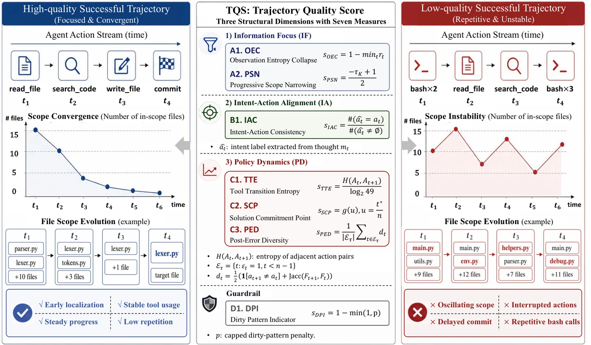

Quality, Not Just Outcome: A Structural Scoring Framework for Selecting Coding-Agent Trajectories for Supervised Fine-Tuning
Findings of EMNLP 2026
从 155,144 条成功轨迹中筛选适合 Coding Agent 监督微调的数据。TQS 根据轨迹结构衡量过程质量，无需 LLM 评审，并在 SWE-bench Verified 上验证了筛选效果。